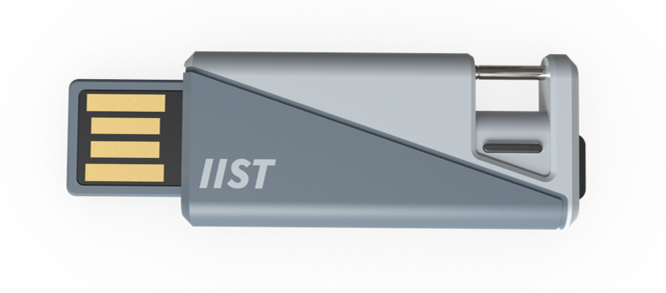
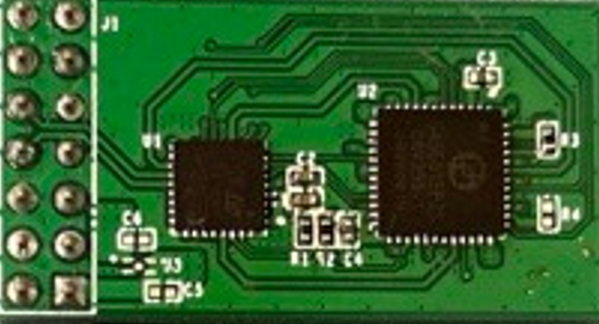
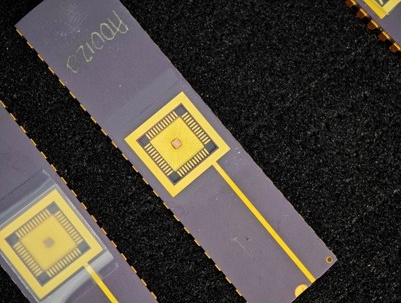

Deploy now
Ankhor USB key
A finished reference platform for hardware-rooted identity, FIDO2 access, protected signing, and system-level PQC and C2PA workflows.
Fast evaluationFIDO2Reference software
Products · Integration depth
The same Dynamic PUF foundation is available as deployable hardware, an integration-ready secure IC or module, and licensable IP for high-volume SoCs.

A finished reference platform for hardware-rooted identity, FIDO2 access, protected signing, and system-level PQC and C2PA workflows.

Add a hardware security anchor to an existing host through standard interfaces, without redesigning the main processor.

Embed the PUF alone or combine it with cryptographic primitives and a security engine for an SoC, secure MCU, ASIC, or chiplet.
Prove the architecture before committing to custom silicon.
Mass-production validated PUF silicon, secure IC and module implementations, and a finished USB platform reduce risk across the complete path. Certification applies only to the named product and configuration in scope.
Discuss a product or sample↗ NextUnderstand the Dynamic PUF foundation→